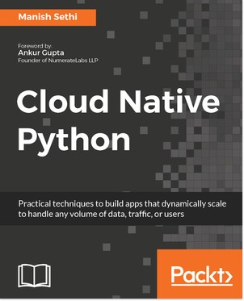
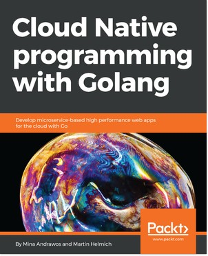

Other Books You May Enjoy
If you enjoyed this book, you may be interested in these other books by Packt:

Cloud Native Python
Manish Sethi
ISBN: 978-1-78712-931-3
- Get to know “the way of the cloud”, including why developing good cloud software is fundamentally about mindset and discipline
- Know what microservices are and how to design them
- Create reactive applications in the cloud with third-party messaging providers
- Build massive-scale, user-friendly GUIs with React and Flux
- Secure cloud-based web applications: the do’s, don’ts, and options
- Plan cloud apps that support continuous delivery and deployment

Cloud Native programming with Golang
Mina Andrawos, Martin Helmich
ISBN: 978-1-78712-598-8
- Understand modern software applications architectures
- Build secure microservices that can effectively communicate with other services
- Get to know about event-driven architectures by diving into message queues such as Kafka, Rabbitmq, and AWS SQS
- Understand key modern database technologies such as MongoDB, and Amazon’s DynamoDB
- Leverage the power of containers
- Explore Amazon cloud services fundamentals
- Know how to utilize the power of the Go language to access key services in the Amazon cloud such as S3, SQS, DynamoDB and more.
- Build front-end applications using ReactJS with Go
- Implement CD for modern applications